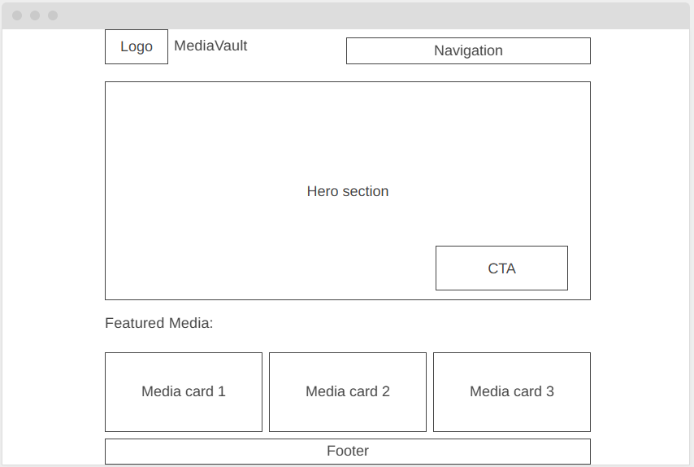

Final project (Site planning)
Site Name:
MediaVault
Why this name? The name MediaVault suggests a secure and curated collection of valuable media content (books, films, albums). The word “Vault” communicates storage and preservation, while “Library” clearly defines the purpose of the site. The name is short, memorable, and brandable.
Site Purpose:
MediaVault is an interactive website that allows users to browse, explore, and save curated media content including books, films, and albums. The site dynamically loads media items from a JSON data source and displays them in a structured, user-friendly layout. It allows visitors to:
- Browse media items by category or genre
- View detailed information in modal dialogs
- Save favorite items using local storage
- Access their saved favorites on a dedicated page
The purpose of the site is to demonstrate dynamic content rendering, user interaction, and responsive web design while providing a practical and engaging browsing experience.
Scenarios:
I’m looking for a new science fiction book. Can I quickly browse by genre and see detailed information before deciding? I found a movie I like. How can I save it so I can come back and watch it later? Where can I see all the media items I previously marked as favorites?Color Schema
| Color | Hex Code | Usage |
|---|---|---|
| Deep Blue | #1E3A8A | Header, section titles, navigation, Buttons (primary actions) |
| Warm Amber | #F59E0B | Hover effects, Icons, “Add to Favorites” button, Links |
| Light Gray | #F3F4F6 | Page background, Card backgrounds (white #FFFFFF), Section separation |
| Dark Gray | #333333 | Body text |
Typography:
| Font | Usage |
|---|---|
| Poppins | Headings, business names |
| Open Sans | Body text, contact info |
Wireframe:
Mobile view:

Desktop view:
